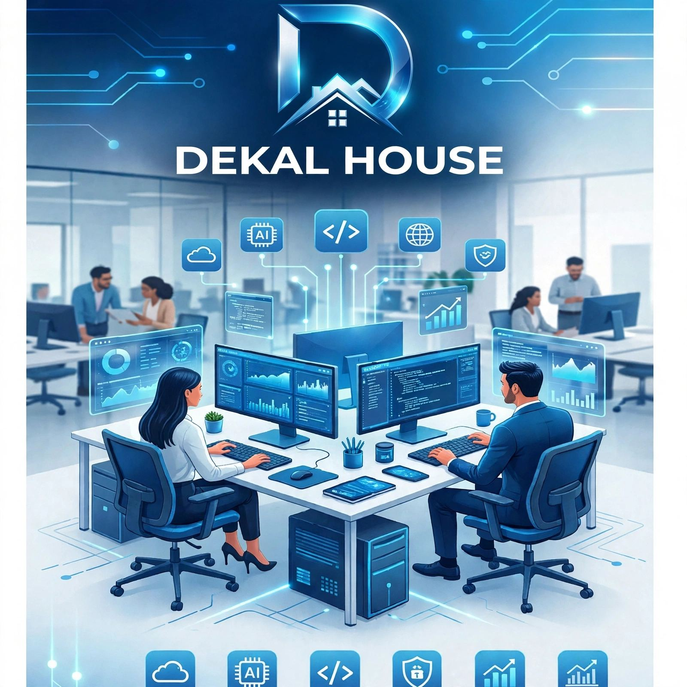
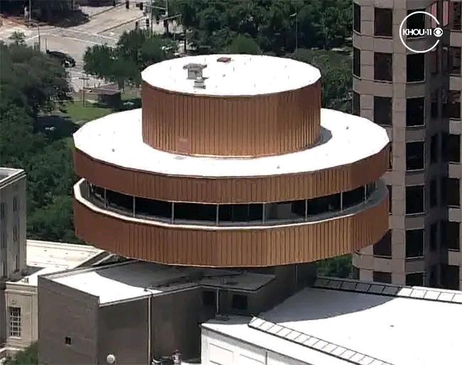
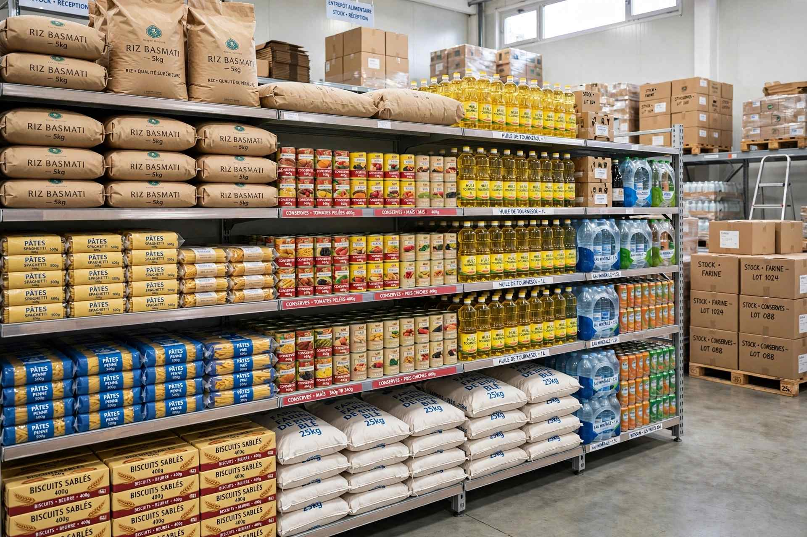
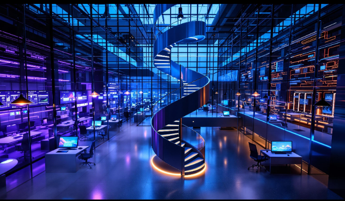

Sites web
Sites vitrines rapides, élégants, responsive et structurés pour présenter votre activité avec impact.
En savoir plus
DEKAL conçoit des sites web, applications, plateformes et outils digitaux modernes pour donner aux entreprises une présence numérique efficace, évolutive et durable.

DEKAL est une marque technologique orientée vers la création de solutions numériques utiles, modernes et adaptées aux réalités de chaque projet. DEKAL HOUSE représente son espace de présentation, d'échange et de développement.
Notre approche associe compréhension du besoin, conception d'expérience, développement rigoureux et amélioration continue. Chaque solution est pensée pour être simple à utiliser aujourd'hui et capable d'évoluer demain.
De l'idée au produit, DEKAL couvre les étapes essentielles d'un projet digital.
Sites vitrines rapides, élégants, responsive et structurés pour présenter votre activité avec impact.
En savoir plusApplications web et interfaces métiers pensées pour simplifier les usages et centraliser les opérations.
En savoir plusConception de plateformes numériques structurées pour répondre à des besoins métier spécifiques.
En savoir plusDes flux automatisés pour réduire les tâches répétitives et améliorer l'efficacité opérationnelle.
En savoir plusOutils numériques personnalisés pour organiser les données, les équipes, les ventes et les opérations.
Parler à DEKALExpériences claires et cohérentes, pensées d'abord pour les utilisateurs et les écrans mobiles.
Voir notre universDEKAL crée des expériences web qui combinent identité visuelle, clarté du contenu, performance et adaptation mobile.
Une solution personnalisée peut réunir les informations essentielles, automatiser des opérations et offrir à vos équipes une expérience plus fluide.
DEKAL identifie les opérations répétitives et imagine des flux numériques capables de les simplifier.
Chaque projet commence par vos objectifs et vos contraintes.
Des interfaces propres, lisibles et adaptées aux usages actuels.
Une base solide pour ajouter de nouvelles fonctionnalités au fil du temps.
Une communication claire à chaque étape du projet.
Nous clarifions le besoin, les utilisateurs et les objectifs.
Nous structurons l'expérience et les fonctionnalités.
Nous construisons la solution avec une base propre.
Nous vérifions les parcours, l'affichage et la robustesse.
La solution est préparée pour son utilisation réelle.
Nous pouvons continuer à améliorer le produit dans le temps.
Nous privilégions des technologies web robustes, accessibles et adaptées au contexte de chaque produit.

Une expérience centralisée pour organiser services, informations et parcours clients.
Discuter d'un projet
Un outil de gestion pour suivre les marchandises, mouvements, achats et ventes.
Discuter d'un projetUne vitrine numérique organisée pour découvrir, rechercher et accéder à des ressources.
Discuter d'un projetUne logique de processus conçue pour réduire les opérations manuelles et accélérer le traitement.
Discuter d'un projetDEKAL réunit une culture orientée produit, développement et résolution de problèmes. Nous avançons avec une idée simple : une bonne technologie doit être comprise, utile et agréable à utiliser.



« L'équipe a su transformer une idée métier en une expérience beaucoup plus claire. Le travail est structuré et l'écoute a fait la différence. »
« Nous avons apprécié la simplicité de la communication et la capacité à proposer des solutions adaptées à notre fonctionnement. »
« Une approche moderne, des échanges directs et une vraie attention portée à l'expérience utilisateur. »
Vous avez une idée précise ou seulement un besoin à clarifier ? DEKAL peut commencer par un échange.
DEKAL propose la création de sites web, applications, plateformes numériques, outils personnalisés, automatisations, interfaces modernes et accompagnement de projets digitaux.
Commencez par nous présenter votre objectif, votre public, les fonctionnalités souhaitées et vos contraintes. Nous pourrons ensuite cadrer la solution.
Sites vitrines, catalogues, interfaces métiers et expériences web sur mesure peuvent être conçus selon le besoin.
Oui. Les solutions DEKAL peuvent répondre aux besoins d'entrepreneurs, équipes, structures et organisations qui souhaitent améliorer leur présence ou leurs opérations numériques.
Oui. La personnalisation porte sur les fonctionnalités, les parcours, les interfaces, les données et les règles propres au projet.
Oui. Une bonne architecture permet d'ajouter progressivement de nouvelles fonctionnalités et d'améliorer l'expérience.
Envoyez-nous votre besoin via le formulaire de contact. Les informations fournies serviront à comprendre le périmètre du projet et à préparer la suite.
La durée dépend du périmètre, du niveau de personnalisation et des validations nécessaires. Un calendrier peut être défini après le cadrage.
Décrivez votre besoin. DEKAL vous répondra avec une première compréhension du projet et les prochaines étapes possibles.